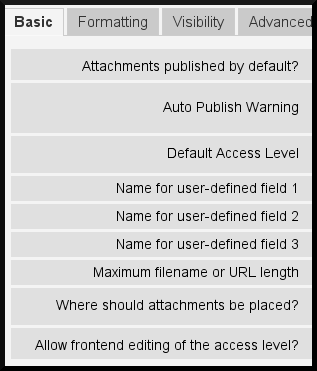
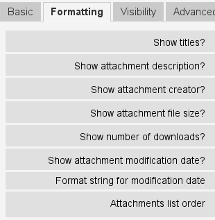
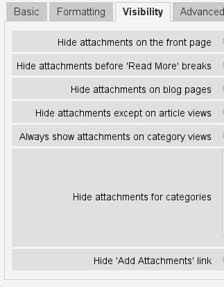
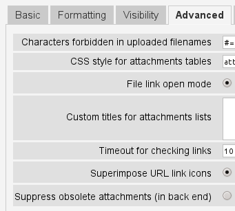
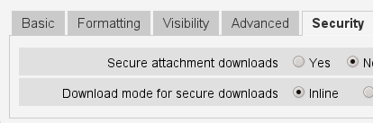
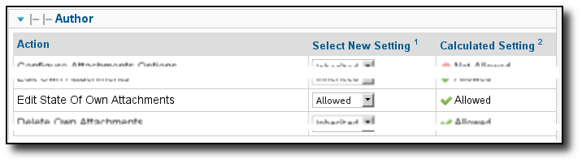

Version 3.0.3 - August 11, 2012
This version is for Joomla 1.7/2.5+
Contents
- Introduction
- New features in Version 3.0
- Major features of the Attachments Extension
- Uploading Restrictions
- Attachments Settings
- Attachments Permissions
- Access Levels Visibility Control
- Display Filename or URL
- Attaching URLs
- What Can Files Be Attached To?
- CSS Styling of Attachment Lists
- File Type Icons
- Administrative Utility Commands
- Warnings
- Upgrading
- Uninstalling
- Migration Attachments from Joomla 1.5 to Joomla 1.7/2.5+
- Translations
- Acknowledgments
- Contact
Introduction
The 'Attachments' extension for Joomla! allows files to be uploaded and attached to articles, categories, or other types of content. The 'Attachments' extension includes a plugin to display the attachments and a component for uploading and managing attachments, as well as other plugins. There are options to control who can see the attachments and who can upload them, along with several many options to increase its flexibility and usefulness. Note: all options are controlled through the component manager.
Warning
This version of the Attachments extension only works for Joomla! 1.7, 2.5 or greater.
Note
In the rest of this document, the term content item is sometimes used. Normally we think of attaching files to articles. Attachments supports attaching files and URLs to articles or categories by default. But it is possible to attach to other types of content types (this requires special 'Attachments' plugins). All of these are referred to as content items.
The 'Attachments' extension has been translated into many different languages. Please see the Translations section for the list of available translations. Most of these languages packs are in the process of being updated for 'Attachments' version 3.0.
If you wish to subscribe to an email list for announcements about this extension, please subscribe using this web page:
New features in Version 3.0
- Full support for the new ACL/permissions system of Joomla 1.7/2.5+. This gives you significant flexibility to control who can create, edit, or delete attachments. See the Attachments Permissions section for more details.
- Full support for viewing access levels. This means you can set some of your attachments to be visible by anyone, and some to be visible only to users in certain groups (as defined by the Access Levels). See the Access Levels Visibility Control section for more details.
- Simplified and improved options for hiding attachments in various contexts.
Major features of the Attachments Extension
You can manage attachments from the article editor, including adding, editing, and deleting attachments.
You can create attachments while an article is being created.
All attachments lists on the front end are updated by Ajax and do not require full page reloads.
You can "attach" URLs as well as files to content items.
You can show the attachments list anywhere in an article (or content item).
- In the administrative back end:
- There are options to filter the listed attachments to unpublished or trashed articles or content items.
- Filtering of the list of articles
- Sorting the list of attachments by any of the column headers.
- Useful administrative utility commands
The Attachments extension supports "Attachments plugins". These plugins allow attaching files to any content item that invokes the onPrepareContent plugin. For example, you can attach files to Category descriptions. With a bit of work, an extension developer can create a new 'Attachments' plugin to support adding attachments to things like CB personal info displays, Virtuemart product descriptions, etc. See section What Can Files Be Attached To? for more details.
Uploading Restrictions
Not all types of attachment files can be uploaded. The 'Attachments' extension will not allow uploading of files that are not permitted by the Joomla! Media Manager. To see (or change) what file types are allowed, go to the Media manager item under the Content menu. Click on the Options button on the toolbar and select the Component tab. There you will see the options for controlling what types of file extensions and mime types are permitted for uploads. The 'Attachments' extension respects these limitations. However, the restriction on 'Legal Extensions (File Types)' is ignored. Add extensions for any file type that you require in the "Legal Extensions (File Types)" field. You may also add appropriate MIME types in the "Legal MIME Types" field.
Warning
If you add items to the "Legal Extensions" or "Legal MIME Types" fields, do not add any spaces!
Attachments Settings
All of the settings for 'Attachments' are controlled via the component manager. To access these settings, go to the administrative back end and select "Attachments" under the "Component" menu. Click on the "Options" button on the right end of the tool bar and you will see options grouped under several tabs.
Basic Options
Attachments published by default: This 'auto publish' feature controls whether new attachments are published by default when they are added. If 'Yes' is selected, when attachments are added, they will published immediately and will be visible to users. If 'No' is selected, new attachments will not be published by default. An administrator or someone with appropriate permissions will need to publish them from the administrative back end before the attachments will be available.
Auto Publish Warning: If the auto-publish option is disabled (see previous option), you may wish to inform those adding attachments how they can get their attachment published. You can insert an appropriate message here. If this field is empty, a general system message will be added suggesting that they contact their system administrator to any newly uploaded attachments published.
Default Access Level: The default access level for new attachments. Each attachment has an 'access level' which controls who can see or download that attachment. When an attachment is created, its access level is set to this default value initially (if the attachment creator is in appropriate groups). A site administrator or someone with appropriate permissions may change the attachment's access level to control who can see that specific attachments.
Name for user-defined field 1-3: If you have some additional information about each attachment that you wish to add, the 'Attachments' extension allows you to defined up to three optional user-defined fields. To create a new field, insert the name for it in one of the three entries. Clear the name to disable the display and editing of this field. The user-defined fields will be shown in the order listed here. The maximum length of each user-defined field name is 40 characters. The data in these fields may be up to 100 characters long.
Hint
If you add an asterisk to the end of a user-defined field name, it will not be displayed on the front end. It will be visible when an attachment is edited on the front end and always visible in the back end. This hidden user-defined field can be used to order attachments in an arbitrary order by putting integer values in the field.
Maximum filename or URL length: The maximum filename or URL length for attachments list. Filenames or URLs longer than this will be truncated and put into the display name (for display purposes only, the actual filename or URL will not be changed). A value of 0 means the filename length is unlimited by this option (the display_name field in the attachments database table is limited to 80 characters). Note: If display filenames or URLs are truncated by this option, the truncated name will be inserted into the "Display Filename / URL" field. This option only affects attachments added after this option is set.
Where should attachments be placed? This option controls the location in the article (or content item) the list of attachments will be placed. This option applies to all attachments lists:
'At the beginning'
'At the end'
'Custom placement' - With this option, the attachments list will appear in the article (or content item) where ever the special tag: {attachments} occurs.
Warning
In custom placement mode, any article (or content item) that does not include this tag will display its the attachments list at its end.
In this mode, when editing an article in the back end, an extra button will be displayed: [Insert {attachments} token]. Position the cursor where you want the custom placement token and use this button to insert the token. This button will add surrounding HTML tags to hide the token when it is not replaced (for example when the attachments list is not supposed to be visible). In HTML, the token looks like this with the surrounding tags to hide it:
<span class="hide">{attachments}</span>In the back end editors, you will see the {attachments} tag but not the HTML 'span' tags unless you switch to HTML mode. In the front end, you will never see the {attachments} tag unless the insert_attachments_tag plugin is disabled. If you wish to remove the {attachments} token, you may want to use the "HTML" view mode in the editor to make sure that you also delete the surrounding span tags.
Warning
The custom placement mode does not work for attachments on Category descriptions.
'Disabled (filter)' - This option will disable the display of attachments lists and suppress the display of any {attachments} tags in articles or content items.
'Disabled (no filter)' - This option will disable the display of attachments lists and will not suppress the display of any {attachments} tags in articles (or content items).
Allow frontend editing of the access level: Allow setting the access level for an attachment from the front end when editing an attachment or creating a new attachment. The 'access level' controls which groups may view (or access) the attachment. Note that the no one editing an attachment will ever be able to set the access level for it to a level for which they are not authorized.
Formatting Options
Show titles: If set to 'Yes', a row of titles will be added above the list of attachments describing what is in each column.
Show attachment description: This setting controls whether the attachment description is shown in the list of attachments.
Show attachment creator: Show the username of the one who created (uploaded) the attachment.
Show file size: This setting controls whether the attachment file size is shown in the list of attachments.
Show number of downloads: This setting controls whether the number of downloads is shown in the list of attachments.
Warning
This option only works for file attachments in secure mode! In non-secure mode, files are maintained as static files and accessed directly, without going through Joomla! code. Therefore it is impossible to update the number of downloads for a file when it is accessed this way. So the display of the number of file downloads will only work in secure mode when this option is set to 'Yes'.
Show file modification date: If this setting is 'Yes', the modification date for the file will be added to the attachment list for articles that have attachments. If 'No' is selected, no date will be added to the attachment list.
Format string for modification date: You may select the format for the modification date by using the format used by the PHP strftime() function. Search the web with 'PHP strftime' for examples. The default format (%x %H:%M) gives dates with 24-hour time like 4/28/2008 14:21. To remove the time of day part, leave out the "%H:%M" part. Note that MS Windows and Linux PHP implementations may differ in some of the codes that they support.
Attachments list order: This option allows you to specify the order in which attachments will be listed in the attachments lists. Most of the options are self-explanatory:
- 'Filename' - If this option is selected, the attachments will be sorted alphabetically by the filename.
- 'File size(smallest first)'
- 'File size(largest first)'
- 'Description'
- 'Display filename or URL' - All attachments that have blank display filenames will appear before the ones with display filenames and will be sorted by their filenames.
- 'Creator' - Sort by the name of the user who uploaded the attachment.
- 'Creation date (oldest first)'
- 'Creation date (newest first)'
- 'Modification date (oldest first)'
- 'Modification date (newest first)'
- 'Attachment ID' - If this option is selected, the attachments will be sorted by the attachment ID. This has the effect of ordering the attachments in the order they were created.
- 'User-defined field 1'
- 'User-defined field 2'
- 'User-defined field 3'
Visibility Options
These options control when attachments will be visible on the front page, assuming the user is in the appropriate groups to see the attachments.
- Hide attachments on the front page: Select this option to prevent any attachments from being shown on the front page of your website.
- Hide attachments before 'Read More' breaks: Select this option to prevent attachments from being displayed on the the front end if they are before 'Read More' breaks in articles. If you click on the link to read the full article, the attachments will be shown.
- Hide attachments on blog pages: Select this option to prevent attachments from being shown on any page with 'blog' layouts.
- Hide attachments except on article views: Select this option to prevent attachments from being shown on any page on the front page except for views for single specific articles.
- Always show attachments on category views: Select this option to always show attachments on category views -- regardless of other options.
- Hide attachments for categories: Hide attachments on any category views for the selected categories. Note that attachments will be displayed for children categories unless they are explicitly selected.
To select or deselect categories without affecting other categories, hold the Control-key when mouse-clicking on the category. In the figure, only one category is selected.
- Hide 'Add Attachments' link: Always hide the 'Add Attachments' link on the front page. This requires attachments to be added to articles, etc, by editing them in the front page (where an 'Add Attachments' button will be available under the editing area).
Advanced Options
Characters forbidden in uploaded filenames: Filenames containing these characters will not be allowed to be uploaded. These characters are problematic in the URL presented to the user for file attachments in 'non-secure' mode so they are forbidden. These characters are generally not an issue when using 'secure' mode since the filename is not used as part of the URL presented to the user.
CSS style for attachments tables: To override the CSS styling of attachments lists, specify your own style name here. The default style name is 'attachmentsList'. See the section CSS Styling of Attachment Lists.
File link open mode: This mode how the links to attachment files will be opened. 'In same window' means the file will be opened in the same browser window. 'In new window' means the file will be opened in a new window. In some browsers, using the 'In new window' option will actually open the attachment in a new tab.
Custom titles for attachments lists: By default, the 'Attachments' extension inserts the title "Attachments:" above the list of attachments for each article or content item (if it has attachments). In some cases, you may prefer using some other term for specific articles or content items. You may specify the exact term you would like to use on an item-by-item basis. For example, if you would like article 211 to use the custom title "Downloads:", then add this to this setting: '211 Downloads' (without the quotes). Use one entry per line. For other types of content items, use the form: 'category:23 This is the title for category 23' where 'category' can be replaced by the name of the content item entity. The example for articles above could have been done with 'article:211 Downloads'. Note that an entry without a numeric ID at the beginning will be applied to all content items. So it is good practice to put such global overrides first in the list and then override the item-by-item custom titles afterward.
Note
If you wish to change the titles used for attachments lists globally, you may copy the translations entry 'ATTACH_ATTACHMENTS_TITLE' from the translation file:
content/attachments/language/qq-QQ/qq-QQ.plg_content_attachments.ini
into the global override file:
language/overrides/en-GB.override.ini
where qq-QQ refers to the language designator code such as en-GB for English. (If you are not familiar with Joomla! translation files, find the line that has 'ATTACH_ATTACHMENTS_TITLE' on left side of the '=' sign and the translation on the right in double-quotes. Edit anything to the right of the '=' sign. Do not change anything to the left of the '=' sign.). The reason to put your translation modifications into the global override file is because the first translation file listed above is part of the Attachments extension and will be updated if the Attachments extensions is upgraded (meaning that any changes you do to it will be lost).
Timeout for checking links: Timeout for checking links (seconds). Whenever a link is added as an attachment, the link is checked directly (you can disable this check in the form). If the link can be accessed before the timeout, the file size and other information about the link is retrieved. If not, generic information is used. To disable the check, enter 0.
Superimpose URL link icons: Superimpose URL link icons over the file attachment icon for each attachment to indicate it is a URL. Valid URLs are shown with arrows and invalid URLs are shown with a red line across the file type icon (bottom left to top right).
Suppress obsolete attachments (in back end): Set the default for suppressing obsolete attachments in the administrative back end. In this context, obsolete attachments are ones attached to unpublished or trashed parents. You can override this using the 'Show attachments for' drop-down menu on the right just above the list of attachments (on the same line as the filter). When you use the drop-down menu to control which attachments are visible, the system remembers that setting until you log out as administrator. So changing this parameter may not seem to have an effect. This parameter setting will come into effect the next time you log in as administrator.
Security Options
Secure attachment downloads: By default, the 'Attachments' extension saves attachment files in a publicly accessible sub-directory. If you choose the secure option, the directory in which the attachments are saved will be made publicly inaccessible. The download links for the attachments in the front end will download the attachment files but will not be direct links. This will prevent access unless users have appropriate permissions. If secure downloads are not selected, the links to the attachments will be shown as the options above indicate, but the files will still be accessible to anyone if they know the full URL, since the sub-directory is public. The secure option prevents access to users without appropriate permissions even if they know the full URL, since this option prevents public access to the attachments sub-directory. In secure mode, any attachment set to the 'Public' access level can be seen and downloaded by anyone.
Hint
If you have problems with filenames with Unicode characters, you should enable the Secure attachment downloads option (especially on Windows servers).
Download mode for secure downloads: This option controls whether files should be downloaded as separate files or displayed in the browser (if the browser can handle that type of file). There are two options:
- 'inline' - In this mode, files that can be displayed by the browser
will be displayed in the browser (such as text files and images).
- 'attachment' - With the 'attachment' mode, files will always be
downloaded as separate files.
In either case, files that can't be displayed in the browser will be downloaded as external files.
Permissions Options
The permissions options are explained in the following Attachments Permissions section.
Attachments Permissions
The attachments extension takes full advantage of the new Joomla! ACL/permissions system introduced in Joomla! 1.6. This gives websites that use Attachments much more flexibility to control who can create, edit, delete and manage attachments.
Before describing the ACL permissions related to Attachments, it is important to understand a key underlying principle:
Important
All attachments are attached to a parent article, category, or other content item. Creating, editing, deleting, or changing the state of an attachment is considered to be a form of editing the parent content item. So the user must first have permission to edit the parent content item before any Attachments-specific permissions are checked.
To change the permissions for various user groups, go to the administrative back end and select "Attachments" under the "Component" menu. Click on the "Options" button on the right end of the tool bar and then select the permissions tab. You will see this:
The attachments permissions options. The permissions for the Public group are shown.
Here is a brief description of permissions related to Attachments that are available:
| Permission | Description / Notes | ACL Action |
|---|---|---|
| Configure Attachments | Allows users to edit the Attachments options. | core.admin |
| Access Attachments | Allows users to access the Attachments extension in the administrative back end | core.manage |
| Create Attachments | Allows users to create attachments (if they may edit the parent). | core.create |
| Delete Attachments | Allows users to delete attachments (if they may edit the parent). | core.delete |
| Edit Attachments | Allows users to edit attachments (if they may edit the parent). | core.edit |
| Edit Attachment State | Allows users to change the state of any attachment (if they may edit the parent). | core.edit.state |
| Edit Own Attachments | Allows users to edit attachments they created (if they may edit the parent). | core.edit.own |
| Edit State Of Own Attachments | Allows users to change the state of any attachment they created (if they may edit the parent). | attachments.edit.state.own |
| Delete Own Attachments | Allows users to delete their own attachments (if they may edit the parent). | attachments.delete.own |
| Edit Attachments For Owned Article/Parent | Allows users to edit any attachment for articles/parents they they own (and may edit the parent). | attachments.edit.ownparent |
| Edit State Of Attachments For Owned Article/Parent | Allows users to edit the state of any attachment for articles/parents they they own (and may edit the parent). | attachments.edit.state.ownparent |
| Delete Attachments For Owned Article/Parent | Allows users to delete any attachment for articles/parents they they own (and may edit the parent). | attachments.delete.ownparent |
Default Permissions
When the attachments extension is installed, it installs these basic permissions:
If you want different defaults, you will need to edit the permissions using the "Permissions" tab on the Attachments options.
Permissions Settings for Common Scenarios
Here are some suggestions about how to set the permissions to achieve the desired behaviors:
Scenario 1 - Authors can publish their own Attachments
In the permissions options, click on the 'Author' entry. Locate the 'Edit State of Own Attachments' line and set it to 'Allowed' and click on 'Save' to verify the changes.
Scenario 2 - Authors can edit/delete their own attachments but no one else's
In the permissions options, click on the 'Author' entry. Locate the 'Edit State Of Attachments For Owned Article/Parent' and 'Delete Attachments For Owned Article/Parent' and set them both to 'Denied'. Click on 'Save' to verify the changes

Since Author still has permissions to edit/delete their own attachments this effectively prevents them from editing/deleting attachments that they did not create, even if they can edit the article.
Note that all user groups derived from Author (e.g., Editor, Publisher, etc) will also be denied from editing or deleting attachments for articles/parents that they did not create (from this permission). Fortunately, they generally have the higher level permissions 'Edit Attachments' and 'Delete Attachments' which means they can edit or delete any attachments on any article that they can edit (assuming their permissions have not been changed).
If you have other common scenarios that you feel should be documented, please feel free to contact me so I can update this documentation (see the end of this page for contact information).
Other Notes on Permissions
- If a user has permissions to edit the state of their attachments, they will see the 'Publish: Yes/No' options on forms to add or edit attachments. If they select 'No' and save the attachment, the attachment will still be visible to them in the front end (while they are logged in). No one else will see the unpublished attachments on the front end. If the user wants to change the Published state, they can edit the attachment (even though it is grayed out) and change the states.
Access Levels Visibility Control
The Attachments extension now supports the Joomla 'Access Levels'. Each attachment can be assigned to specific access levels such as 'Public', 'Registered', and 'Special', as well as any other access levels created on your site. The two basic levels are:
- 'Public' - Anyone visiting the website will be able to see and download attachments with 'access level' set to 'Public' if the article/parent is visible and no other Attachments visibility settings prevent the attachments from being shown.
- 'Registered' - Anyone that is logged into the website will be able to see and download attachments with 'access level' set to 'Registered' if the article/parent is visible and no other Attachments visibility settings prevent the attachments from being shown.
The effect of other access levels depends on the groups associated with the access level.
The ability to set the 'Access Level' for individual attachments gives extensive control on who is able to see and download attachments.
Note
Suppose you create a new access level on your site. Users that are not explicitly members of the groups associated with the new access level will not be able to set their attachments for that access level. If you edit an attachment as the Super User, you might be surprised that the new access level does not show up in the access level options. There are two potential issues. (1) If you have just created the new access level, you may need to log out of the back end and log in again for the changes to be completely visible. (2) The other reason is that the user (Super User, for instance) is not in the access level. The fix is simple, make sure the user is in one of the groups associated with the new access level.
Display Filename or URL
Normally, when files are uploaded (or URLs are installed) and listed in a list of attachments, the full filename (or URL) is shown as a link to download the attachment. In some cases, the filename (or URL) may be too long for this to work nicely. In the upload form, there is another field called "Display Filename or URL" in which the person uploading the file can insert an alternative filename (or URL) or label to display instead of the full filename (or URL). For instance, some abbreviation of the filename could be added in this field. The field may be edited in the administrative back end when attachments are edited. Note: There is an option called "Maximum Filename or URL Length" in the 'Attachments' extension options. It can be set to automatically truncate uploaded displayed filenames; the resulting truncated filename will be inserted into the "Display Filename or URL" field.
Attaching URLs
Besides files, 'Attachments' version 3.0 has is the ability to "attach" URLs to content items. When you bring up one of the "Add attachment" dialog boxes, you will see a button labeled as "Enter URL instead". If you click on it you will get an entry field for the URL and see two options:
- Verify URL existence? - In order to determine the file type of the
URL (to pick a suitable icon), the code queries the server for basic information about the file including the file type and size. In some cases, the server will not respond to these requests even though the URL is valid. By default, Attachment will not accept URLs that have not been validated by the server. But if you know the URL is valid, you can uncheck this option and force the 'Attachments' extension to take the URL--but there are no guarantees the file type or file size will be correct. Note that the server will be queried whether or not this option is selected.
- Relative URL? - Normally you will enter URLs prefixed with 'http...' to
indicate an full website URL. If you wish to point to files/commands relative to your Joomla installation, use the 'relative' option.
The URLs are shown with the file-type icon and overlaid with an arrow (indicating that it is a good link) or an red diagonal slash (indicating that it could not be validated). When you edit a URL, you can change whether the link is valid or not to get the overlay you wish. Also note that URL overlays can be disabled entirely using the main Superimpose URL link icons parameter. There are several useful commands relating to URLs (and files) in the "Utilities" command in the back end.
What Can Files Be Attached To?
Besides attaching files or URLs to articles, it is possible to attach files or URLs to other types of content items such as Categories (see below). If appropriate 'Attachments' plugins are installed, it may be possible to attach files or URLs to a wide variety of content items such as user profiles, shopping cart product descriptions, etc. Basically any content item that is displayed on the front end and uses the content event 'onPrepareContent' can host attachments (if a suitable 'Attachments' plugin is installed). Content items that invoke content events are typically items that have content to be displayed (such as articles) or have descriptions that will be displayed.
Attaching Files or URLs to Category Descriptions
With this version of attachments, users can attach files to Category descriptions. These descriptions are generally only visible on Category Blog pages. Attachments may be added to Category descriptions in the Category editor.
Warning
Attachments for categories will only show the category basic parameter 'description' is set to Show (via the Menu Editor) AND the category description is not empty.
If you wish to learn more about how to develop a new Attachment plugin, there is a manual that is available as part of this 'Attachments' installation:
Warning
The Attachment Plugin Creation Manual has not been updated for Attachments 3.0 yet. There have been some architectural changes that means that Attachments plugins in Joomla 1.7/2.5+ will have some significant differences from those for Joomla 1.5.
CSS Styling of Attachment Lists
The lists of attachments on the front end are done using a special 'div' that contains a table for the attachments. The table has several different CSS classes associated with it to allow the website developer the flexibility to customize the appearance of the table. Look in the attachments plugin file CSS file (in plugins/content/attachments.css) for examples. If you wish to change the style, consider copying the original styles into the end of the same file and renaming 'attachmentsList' in the copied section to something of your choice. Edit the 'Attachments' parameter (in the component manager) and change the parameter attachments table style to the new class name. Then modify the class definitions in your copied section appropriately. This approach will allow you to quickly revert to the original style by changing the plugin parameter attachments table style back to its default, 'attachmentsList'. This also has the advantage that the section of modified styles can be copied to a file and easily brought back in when the version of 'Attachments' is upgraded. This could also be done via a CSS @import command.
File Type Icons
The 'Attachments' extension adds an icon in front of each attachment in the list of attachments. If you wish to add a new icon type, follow these steps:
- Add an appropriate icon in the directory 'media/attachments/icons', if an appropriate icon is not already there;
- Edit the file 'components/com_attachments/file_types.php' and add an appropriate line to the static array $attachments_icon_from_file_extension which maps a file extension to an icon name (all in the media/attachments/icons directory). If this does not work, you may need to add an appropriate line to the array $attachments_icon_from_mime_type.
- Don't forget to make copies of the icon file and the updated file_types.php to some directory outside of the website directories before upgrading the version of 'Attachments' in the future.
Administrative Utility Commands
There are several utility commands in the back end that are available for Administrators. These include:
Disable uninstallation of MySQL Attachments Table: Normally, when the Attachments extension is uninstalled, the database table is deleted that contains information about the attachments. If you wish to retain this data when uninstalling Attachments, execute this command. After you uninstall Attachments the attachments table will remain.
Reinstall Default Asset Rules or Attachments Permissions: When the Attachments extension is installed, the installer adds several default asset rules so that the custom permissions added in the Attachments extension behave logically and similarly to the standard permissions. If you reinstall or update Joomla, these asset rules may be lost. You can restore them by executing this command.
Regenerate attachment system filenames: This command is very useful when you move (migrate) your attachments from one computer to another. The full path each file attachment is kept in the database and called the "system filename". If you move attachments from one system to another, it is very likely this path information will be incorrect. You may execute this command to regenerate all of the system filenames for all file attachments.
The Utility command to "Regenerate system filenames" works for migration from windows to Linux servers. It also works for migration from Linux to Windows servers with a couple of potential problems:
- When you copy your files to your Windows server, you need to verify that the attachments directory (usually 'attachments') and all files within it are writable by the Joomla web server.
- You may have problems porting files that have Unicode characters in their filenames because the archiving/unarchiving software has problems with the Unicode filenames (on the Windows side). You may need to save those files, delete the corresponding attachments, and then re-attach them.
Remove spaces from filenames: You may execute this command to replace all spaces with underscores in the filename for all file attachments. This may be necessary on some systems. In 'Secure' mode, this should not be necessary.
Update attachment file sizes: This command will recompute the file sizes for all file attachments.
Check existence of attachment files: This command may be used to verify that the file exists for all file attachments. Missing files will be listed.
Validate URLs: The URL attachments retain information about the validity of the URL given. This command will check each URL attachment and check the validity of the URL and update the validity information for the attachment.
Note
In the back end, sometimes when you execute one of the Utility commands, you may get a warning that the browser needs to resend the request. This is harmless, so click [OK] and the command will execute.
Warnings
If you have attachment files that are sensitive or private, use the *Secure attachment downloads* option! If you do not use the secure option, the attachment files are saved in a public sub-directory and are accessible to anyone that knows the full URL. The secure option prevents access by anyone that does not have appropriate permissions (as determined by the options above). See the discussion of the Secure attachment downloads option above for more detail.
Every time a file is uploaded, the existence of the upload sub-directory is checked and it will be created if if it does not exist. By default the sub-directory for uploaded files is 'attachments' in the root directory of your web site files. The name of the sub-directory can be changed using the 'Sub-directory for uploads' option. If the 'Attachments' extension is unable to create the sub-directory for uploads, you must create it yourself (and you may have problems uploading files). Make sure to give the sub-directory suitable permissions for uploading files. In the Unix/Linux world, that is probably something like 775. Note the process of creating the upload sub-directory may fail if the top level directory of your website has permissions that prevent the web server (and PHP) from creating sub-directories. You may need to loosen the permissions temporarily to allow the sub-directory to be created by uploading attachments.
If this extension does not permit you to upload specific types of files (such as zip files), be aware that the extension respects the restrictions placed by the Media Manager on types of files permitted to be uploaded. This is to prevent uploading of potentially harmful types of files such as html or php files. The administrator can update the Media Manager settings to add specific file types by going to the "Global Settings" item under the "Site" menu, selecting the "System" tab, and added the appropriate file extension in lower and upper case and Mime type to the lists under the "Media Manager" section.
If you cannot see the attachments in the front end, there are several possible reasons:
- The attachment is not published. You can change this in Attachments manager page in the back end.
- The parent article or content item is not published.
- The attachment access level is set to 'Registered' and you are not logged in on the front end.
- The 'Content - Attachments' plugin is not enabled. Use the plugin manager to enable it.
- In the 'Content - Attachments' (via the plugin manager), the access level is not set to 'Public'.
- If your site uses caching, try clearing the caches and refreshing the page.
- If you not seeing attachments for a category in a category blog view and you are using a custom template, it may be necessary to make a small modification to the template in order to see the category attachments. Feel free to contact the author for help with this issue (see the contact info at the bottom of this page).
If you encounter limits on the sizes of files that you attempt to upload, try adding the following lines to the .htaccess file in the root of your Joomla! website:
php_value upload_max_filesize 32M php_value post_max_size 32M
where you may change the 32M (megabytes) value to whatever you wish as the maximum upload file size.
'Attachments' now supports "attaching" URLs to content items. If your server is Windows Vista and you encounter problems attaching URLs that involve localhost, this is a known problem related to IPv4 and IPv6 conflicts. To fix it, edit the file:
C:\Windows\System32\drivers\etc\hosts
Comment out the line that has ::1 on it. Note that hosts is a hidden system file and you may need to modify your folder options to show hidden files to see and edit it.
If you have difficulties attaching files that have Unicode characters (such as Russian/Cyrillic characters), set the Secure Attachments Downloads option to 'Yes'. Filenames with Unicode characters should work properly on Linux servers in secure or non-secure modes, but do not always work correctly on Windows servers in non-secure mode.
'Attachments' now supports attaching files to articles while they are being created in the Article editor. There is one limitation to this. New attachments are in a state of "limbo" after the file is uploaded and before the article is actually saved for the first time. During this (hopefully brief) limbo period, the new attachments are identified by user id only. So if more than one person is using the same user account and they create articles at the same time and add attachments at the same time, there is no guarantee that the attached files will end up with the correct article.
There is a 'Help' forum and a 'Frequently Asked Questions' forum for the 'Attachments' 3 extension that is hosted on the joomlacode.org website. If you encounter a problem that is not covered in this help page, please consult the forums. (Please post questions on the 'Help' form. I will post commonly asked questions on the 'Frequently Asked Questions'):
Upgrading
Upgrading is very easy. You have two choices:
- Simply install the new version of 'Attachments'. There is no need to uninstall the previous version. You do not need to do anything to retain your old attachments. Simply install the new version and it will update everything appropriately.
- PREFERRED: One of the excellent new features in Joomla 1.6 and later is the extension updater. Go to the Extension Manager in the back end and click on the 'Update' tab. Click 'Purge Cache' and then 'Find Updates' on the toolbar. If there is a new release of Attachments, it will be shown. You can select the release and then click on the 'Update' button on the toolbar to install the new release. This makes keeping the Attachments extension updated very simple!
Uninstalling
To uninstall the Attachments extension, go to the 'Manage' tab on the Extension Manager page (under the 'Extensions' menu). Select ONLY the item:
Package: Attachments for Joomla 1.7/2.5+
and click on the 'Uninstall' button on the toolbar. This will uninstall the attachments component and all the associated plugins.
If you wish to retain your attachments, make a copy of the 'attachments' directory at the top of the Joomla installation and copy the '_attachments' table in the database. If you intend to reinstall soon, see the Disable uninstallation of MySQL Attachments Table command in the Administrative Utility Commands to prevent the attachments database table from being deleted on uninstallation of the Attachments extension.
If you do not wish to keep existing attachments, delete them all first (in the administrative back end). Once you have uninstalled the Attachments extension, delete the 'attachments' directory at the top of your Joomla installation.
Migration Attachments from Joomla 1.5 to Joomla 1.7/2.5+
To migrate your attachments from a Joomla 1.5 site to a Joomla 1.7/2.5 (or later) site, follow the procedure outlined here:
Translations
This extension provides translation capabilities and supports the following languages (besides English). Note that some of these languages packs are in the process of being updated for 'Attachments' version 3.0 and not available yet for Attachments 3.0.
Thanks to these translators (available versions shown in parentheses):
- Bulgarian: by Stefan Ilivanov (1.3.4)
- Catalan: by Jaume Jorba (2.2, 3.0)
- Chinese: Traditional and simplified Chinese translations by baijianpeng (白建鹏) (1.3.4)
- Croatian: Tanja Dragisic (3.0, 1.3.4)
- Czech: by Tomas Udrzal (1.3.4)
- Danish: by Sune Folkmann (3.0), Villy Feltmann (2.2), Bo Urskov (1.3.4)
- Dutch: by Parvus (2.2, 3.0)
- Finnish: by Tapani Lehtonen (2.2)
- French: by Marc-André Ladouceur (2.2, 3.0), Yann Kerviel (3.0), and Pascal Adalian (1.3.4)
- German: by Pierre Corell (3.0), Bernhard Alois Gassner (2.2), and Michael Scherer (1.3.4)
- Greek: by Antonis Mylonopoulos (3.0), Harry Nakos (1.3.4, 2.0)
- Hungarian: Formal and informal translations by Szabolcs Gáspár (1.3.4)
- Indonesian: by Moh. Arif (3.0)
- Italian: by Piero Mattirolo (2.2, 3.0) and Lemminkainen and Alessandro Bianchi (1.3.4)
- Norwegian: by Roar Jystad (2.2, 3.0) and Espen Gjelsvik (1.3.4)
- Persian: by Hossein Moradgholi and Mahmood Amintoosi (2.2)
- Polish: by Sebastian Konieczny (2.2, 3.0), Stefan Wajda (3.0), and Piotr Wójcik (1.3.4)
- Portuguese (Brazilian): by Nelson Teixeira (3.0), Arnaldo Giacomitti and Cauan Cabral (1.3.4)
- Portuguese (Portugal): by José Paulo Tavares (2.2, 3.0) and Bruno Moreira (1.3.4)
- Romanian: by Alex Cojocaru (2.2, 3.0)
- Russian: by Sergey Litvintsev (2.2, 3.0) and евгений панчев (Yarik Sharoiko) (1.3.4)
- Serbian: by Vlada Jerkovic (1.3.4)
- Slovak: by Miroslav Bystriansky (1.3.4)
- Slovenian: by Matej Badalič (2.2, 3.0)
- Spanish: by Manuel María Pérez Ayala (2.2, 3.0) and Carlos Alfaro (1.3.4)
- Swedish: by Linda Maltanski (2.0) and Mats Elfström (1.3.4)
- Turkish: by Kaya Zeren (3.0, 2.0)
- Ukrainian: by Sergey Litvintsev (3.0)
Many thanks to these translators! If you would like to help translate the extension to any other language, please contact the author (see the Contact section at the end).
Acknowledgments
Many thanks for the following contributors or resources:
The book Learning Joomla! 1.5 Extension Development: Creating Modules, Components, and Plugins with PHP by Joseph L. LeBlanc was very helpful in creating the 'Attachments' extension.
- The icons for the file types were derived from several sources, including:
- The Silk icons by Mark James (http://www.famfamfam.com/lab/icons/silk/)
- File-Type Icons 1.2 by John Zaitseff (http://www.zap.org.au/documents/icons/file-icons/sample.html)
- Doctype Icons 2 by Timothy Groves (http://www.brandspankingnew.net/archive/2006/06/doctype_icons_2.html)
- OpenDocument icons by Ken Baron (http://eis.bris.ac.uk/~cckhrb/webdev/)
- Sweeties Base Pack by Joseph North (http://sweetie.sublink.ca)
Note that many of the 'Attachments' icons were modified from the original icon images from these websites. If you would like the original versions, please download them from the websites listed above.
Many thanks to Paul McDermott for generously donating the search plugin!
Thanks to Mohammad Samini for donating some PHP code and CSS files to improve 'Attachments' displays in right-to-left languages.
Thanks to Ewout Weirda for many helpful discussions and suggestions in the development of the 'Attachments' extension.
Contact
Please report bugs and suggestions to jmcameron@jmcameron.net